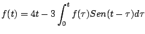

|
|
|
|
|Instituto Tecnológico de Costa Rica|Escuela de Matemática| M. Sc. Geovanni Figueroa M. |
1 2
3 4
5 6 7
8 9
10 11
12 13 14
15 16
|
|
Ecuaciones Integrales El teorema de convolución es útil en la solución de otros tipos de ecuaciones en las cuales aparecen integrales de una funciones desconocida.
Ejemplo

Solución
Aplicando la transformada a ambos lados de la ecuación integral tenemos
Luego
|